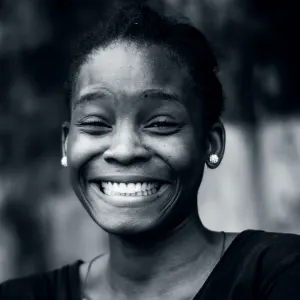
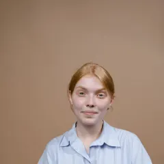
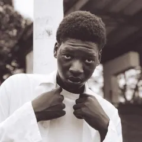

Student life
The Houses
Four Houses, each the home of a family of arts. Your program decides your House: you live in its wing beside its studios, eat at its table, and compete for its Cup.
Muse of dance
Terpsichore House
Corpore et anima · With body and soul
The House of movement. Discipline, stamina, and teamwork.
Majors in Terpsichore
- Members
- 420
- Wing
- South Tower, Ashcombe Hall
- Next door to
- The Vega Dance Studios and the Circus Barn, by a covered walkway
- Common room
- The Mirror Loft, a sprung-floor lounge
- Living in
- Dance and Musical Theater live in all four years; Circus Arts in first year
- Colors
- Garnet and gold
- Signature event
- The Autumn Ball
- Every week
- Barre at Dawn, a 6:30am Saturday class open to every House
Muse of music
Euterpe House
Audi et crea · Listen, then create
The House of sound. Patience, listening, and harmony.
Majors in Euterpe
- Members
- 430, plus 24 MFA
- Wing
- West Cloister, Ashcombe Hall
- Next door to
- The Chapel, the music building, the Cellar Club, and the Chapel Street recording studios
- Common room
- The Organ Gallery, above the chapel
- Living in
- Instrumental and Voice students live in for first year
- Colors
- Midnight blue and gold
- Signature event
- The Chapel Concert Series
- Every week
- Evensong, Sunday singing in the chapel
Muse of tragedy, now all drama
Melpomene House
Per umbras ad lucem · Through shadows to light
The House of drama on stage and screen. Empathy, courage, and storytelling.
Majors in Melpomene

Coming up in Melpomene
- NOV6Movie night: classic musicals8:30pm · The Candle Cellar
- NOV18Screening and talk: Naomi Achterberg-Lowe7pm · The Screening Room, North Cloister
- DEC3Winter Candlelit Readings8pm · The Candle Cellar
- FEB18The Spring Play7:30pm, through February 21 · The Aurelian Theatre
- Members
- 560
- Wing
- North Cloister, Ashcombe Hall
- Next door to
- The Aurelian Theatre, the Black Box, the Writers' Room, the scene shop, and the soundstage
- Common room
- The Candle Cellar, a vaulted reading room
- Living in
- Acting, Directing, and Theatre Design live in for first year
- Colors
- Plum and silver
- Signature event
- The Winter Candlelit Readings
- Every week
- Script Night, new scenes read aloud on Thursdays
Muse of comedy, now the visual arts
Thalia House
Ridentem dicere verum · To tell the truth while laughing
The House of the eye and the hand. Observation, craft, and curiosity.
Majors in Thalia
- Members
- 550
- Wing
- East Tower, Ashcombe Hall
- Next door to
- The North Quad studios, the Forge, the Kiln & Glass House, the Loom Room, the darkroom, the Model Shop, and the Long Gallery
- Common room
- The Sun Room, a glass-roofed attic studio
- Living in
- No requirement; most live in for first year
- Colors
- Saffron gold and ivory
- Signature event
- Spring Open Studios
- Every week
- Sketch Night, Wednesday life drawing open to every House
Choose a House
A day in each House
Every House starts its morning in its own studios. Pick one to walk through a weekday.
- 6:45amBreakfast in the RefectoryPorridge and fruit before class.
- 7:30amBallet techniqueStudio 3 with Prof. Vega.
- 10:00amContemporary or aerialSprung floors or the Circus Barn.
- 1:00pmCore seminarArt and Ideas, with a painter and a violinist.
- 3:00pmRehearsalThe Autumn Musical.
- 9:30pmIce baths and the Mirror LoftThen lights out early.
- 7:30amBreakfastThen warm-ups in a practice room.
- 9:00amPrivate lessonOne hour with your teacher.
- 11:00amTheory and ear trainingSmall classes of twelve.
- 2:00pmOrchestra, choir, or big bandIn the orchestra hall.
- 5:30pmDinnerAt the Euterpe table.
- 9:00pmThe Cellar ClubFriday jazz sets, open to everyone.
- 8:00amVoice and movementRehearsal Room B.
- 10:00amScene study or writing workshopEight to twelve students.
- 1:00pmFilm set or scene shopBuild, shoot, light.
- 5:30pmDinnerAt the Melpomene table.
- 7:00pmRehearsalThe Spring Play.
- Thursday 9pmScript NightNew scenes read in the Candle Cellar.
- 8:00amStudioNorth light, coffee, your own easel or bench.
- 10:00amTutorialWith two classmates and a Fellow.
- 1:00pmThe Forge, the kiln, or the Loom RoomHands-on making.
- 4:00pmCritiqueFriday crits with visiting artists.
- 7:00pmSketch NightWednesday life drawing for every House.
- LateAny studio, any hourEvery studio is open 24/7.
The Morning Rule
Which House you join
Since 1847, every program has joined the House whose studios its students use for their daily technique, the work they do first thing every morning. That is why Film is in Melpomene, beside the actors, and Jewelry & Metal Arts is in Thalia, beside the Forge.
Your decision letter in March names your House. Your Welcome Letter in August names your wing, room, roommates, Head of House, and House Tutor.
Musical Theater students
They sing, act, and dance, but they join Terpsichore, because ballet and jazz class start their day.
Double majors
You belong to the House of the major you list first and become an associate member of the second: you may use its common room, join its workshops, and perform in its showcase. Your Muses' Cup points go to your first House. You may swap which is first once, at the end of first year.
Changing your major
If your new major is in another House, you move at the start of the next term. You may finish the year in your room, your points stay with your old House, and you get your new scarf at the next Formal Dinner.
Minors, study abroad, and leave
Minors never change your House. A term in Florence or Paris doesn't interrupt membership, and your room is held. A leave of absence pauses membership, and you return to the same House.
MFA students, transfers, and commuters
MFA writers are graduate members of Euterpe. Transfers join the House of their major. Commuters are full members, with a locker and day room in their wing, a seat at the House table, and a vote.
Can I choose a different House?
Not without changing your major. A House is the family of your art.
Run by students
House prefects
Each House is led day to day by fourteen of its own students: a Captain, a Vice-Captain, and twelve prefects. Together with the Head of House they form the House Committee, which meets every Monday.
Terpsichore House · House Committee 2026–27 · Head of House: Prof. Marisol Vega
Imani Brooks
Fourth year · BFA Dance
Dev Malhotra
Third year · BFA Musical Theater
Floor Prefect, floor 1
Mateus Lima
Floor Prefect, floor 2
Nia Thompson
Floor Prefect, floor 3
Hannah Reid
Floor Prefect, floor 4
Kofi Mensah
Studio Prefect
Aiyana Begay
Welfare Prefect
Jordan Ellis
Access Prefect
Rosalind Pike
Showcase Prefect
Gabriel Ortega
Quartet Prefect
Yuna Kim
First-Year Rep
Leila Moradi
First-Year Rep
Ethan Caldwell
Commuter Representative
Valentina Russo
Euterpe House · House Committee 2026–27 · Head of House: Prof. Nadia Haddad
Lucas Fernández
Fourth year · BM Voice & Opera

Amara Okafor
Third year · BM Instrumental Performance
Floor Prefect, floor 1
Oscar Lindgren
Floor Prefect, floor 2
Grace Liu
Floor Prefect, floor 3
Andre Baptiste

Floor Prefect, floor 4
Freya Holm
Studio Prefect
Tomás Rivera
Welfare Prefect
Esther Nakamura

Access Prefect
Ibrahim Diallo
Showcase Prefect
Chloe Martin
Quartet Prefect
Arjun Mehta
First-Year Rep
Mia Rossi
First-Year Rep
Noah Bennett
Commuter Representative
Hyun-woo Lee
Melpomene House · House Committee 2026–27 · Head of House: Prof. Desmond Okoro
Zara Whitfield
Fourth year · BFA Directing
Felix Brennan
Third year · BFA Acting
Floor Prefect, floor 1
Jasper Quinn

Floor Prefect, floor 2
Ines Carvalho
Floor Prefect, floor 3
Bea Okonkwo
Floor Prefect, floor 4
Malcolm Hayes
Studio Prefect
Ruby Thornton
Welfare Prefect
Omar Farouk
Access Prefect
Tessa Lund
Showcase Prefect
Caleb Wright
Quartet Prefect
Anaya Patel
First-Year Rep
Zoe Kaplan
First-Year Rep
Diego Navarro
Commuter Representative
Simone Achebe
Thalia House · House Committee 2026–27 · Head of House: Prof. Amara Nwosu
Jun Park
Fourth year · BFA Jewelry & Metal Arts
Lena Sato
Third year · BFA Illustration & Animation
Floor Prefect, floor 1
Olivia Strand
Floor Prefect, floor 2
Rafael Cruz
Floor Prefect, floor 3
Henry Walsh
Floor Prefect, floor 4
Meera Iyer
Studio Prefect
Ezra Goldman
Welfare Prefect
Camila Torres
Access Prefect
Luca Moretti
Showcase Prefect
Aisha Bello
Quartet Prefect
Kenji Watanabe
First-Year Rep
Isla MacLeod
First-Year Rep
Samir Khan
Commuter Representative
Nora Fitzgerald
What do prefects do?
House Captain1 per House
A fourth-year, elected by the whole House
Leads the House Committee, speaks for the House to the Senior Tutor, gives the toast at Formal Dinner, and carries the banner at Matriculation and Commencement.
Vice-Captain1 per House
A third-year, elected by the whole House
Runs the House Revels team and the House Fund budget, and steps in for the Captain.
Floor Prefects4 per House
One per floor, chosen by the Head of House
The first knock on the door: settle noise, guest, and roommate problems, run floor meetings, and walk first-years to class in week one.
Studio Prefect1 per House
A third- or fourth-year in the House's main art
Keeps the House's studios fair and safe: books overnight monitors, runs the safety briefings, and reports broken equipment.
Welfare Prefect1 per House
Trained by the Wellbeing Centre
A confidential first stop for anyone struggling, and the link to the Emergency Fund and the Hearth Pantry.
Access Prefect1 per House
Works with Accessibility Services
Makes sure every House event, room, and trip works for every member.
Showcase Prefect1 per House
Elected by the House
Produces the House Showcase and the House's signature event.
Quartet Prefect1 per House
Elected by second- and third-years
Matches House members with the other three Houses for Quartets and the Mainstage season.
First-Year Reps2 per House
Elected by first-years in week 4
Speak for the newest members on the House Committee.
Commuter Representative1 per House
A commuter, elected in week 2 of Autumn term
Speaks for members who live off campus and runs the wing's day room and lockers.
Standing in Summer term
How to become a prefect
Elections are held in weeks 5 and 6 of Summer term, for the year after. Here is the whole path, start to finish.
- 1
Check you can stand
Any member in good standing can stand, including commuters and students on the Promise. Captains must be going into fourth year, Vice-Captains into third.
- 2
Talk to a current prefect
Shadow the role you want for a week in Spring term. Every prefect hosts at least one shadow.
- 3
Write a one-page statement
Say why you want the role and one thing you would change. Hand it to the House Tutor by the Friday of week 5, Summer term.
- 4
Give a two-minute speech
Candidates speak at Formal Dinner in week 6. No slides, no props, just you and the House.
- 5
The House votes, or you interview
Every member votes online, one vote each. Floor, Welfare, and Access Prefects are chosen by the Head of House after a short interview instead.
- 6
Train in Welcome Week
New prefects get their gold pin at the first Formal Dinner of Autumn term, after three days of leadership and first-aid training.
What prefects get
A gold pin with the House crest, a $1,200 a year stipend paid as work-study, first pick of Solo rooms, and leadership training in Welcome Week. The stipend means students on the Promise can afford to lead.
What prefects can and can't do
Prefects can award up to 5 House points at a time for kindness, craft, or help. They can never take points away, set punishments, or enter a room without permission. Serious problems go to the House Tutor or the Head of House.
How much time it takes
About four hours a week, mostly evenings. Prefects never miss classes or rehearsals for House duties, and they can step down at the end of any term.
Never a silo
How the Houses work together
Each House is built around one art, so collaboration is built into the degree.
Quartets
Every second- and third-year joins a Quartet each Spring: one student from each House making one finished piece. Shown at Quartet Night.
Core seminars
The shared Aurelian Core classes always mix at least three Houses at the table.
Muses' Night
On the first Friday of each month, Formal Dinner seating is drawn by lot.
The House Revels
Four contests a term, one from each art, so dancers sing and painters dance.
Every Mainstage show needs all four Houses
The Autumn Musical, November
- Terpsichore
- Lead cast, ensemble, choreography
- Euterpe
- Pit orchestra, vocal coaching
- Melpomene
- Director's team, speaking roles, lighting, sound, stage management, producing
- Thalia
- Poster, program, scenic painting, props, jewelry
The Spring Play, February
- Terpsichore
- Movement direction
- Euterpe
- Original score, live sound
- Melpomene
- Cast, design, build, producing, a filmed version
- Thalia
- Set models, scenic painting, poster
The Summer Concert, May
- Terpsichore
- Dance works
- Euterpe
- Orchestra and choir
- Melpomene
- Lighting, stage management
- Thalia
- Projections, a foyer exhibition
Autumn term standings
The Muses' Cup
Points come from House Showcases (scored out of 100 by visiting artists on the same four criteria for every art), the Revels, Quartets, the Dean's List, service, and Formal Dinner attendance. Anything that depends on headcount is scored per 100 members, so bigger Houses get no head start.
Updated every Friday. Only the Senior Tutor can take points away, never more than 10 at once.
Find your House
Your major is your House
Your House comes from the major you apply for. Each House is a family of arts that train together every morning, live in the same wing, and share a Head of House.
- Musical Theater joins Terpsichore, because dance class starts its day.
- Double majors belong to the House of the major listed first.
- Changing your major to another House moves you at the start of the next term.
Pick a major to see the House you'd join, where you'd live, and who'd look after you.
See every major by House
 Terpsichore House · Movement
Terpsichore House · Movement
- Musical Theater
- Dance
- Physical Theatre & Circus Arts
 Euterpe House · Sound
Euterpe House · Sound
- Instrumental Performance
- Voice & Opera
- Jazz & Contemporary Music
- Music Composition & Production
- Musical Theater Writing
Melpomene House · Drama on stage and screen
- Acting
- Directing
- Creative Writing & Playwriting
- Film & Cinematography
- Theatre Design & Technology
- Arts Management
 Thalia House · The eye and the hand
Thalia House · The eye and the hand
- Fine Arts
- Illustration & Animation
- Photography
- Jewelry & Metal Arts
- Ceramics & Glass
- Art History
- Fashion & Textile Design
- Interaction & Graphic Design
- Architectural Design
Find your place in a House
Apply to the major you love and your House comes with it. Questions about life in a House? Write to its Head.
- Terpsichore HouseProf. Marisol Vega
- Euterpe HouseProf. Nadia Haddad
- Melpomene HouseProf. Desmond Okoro
- Thalia HouseProf. Amara Nwosu